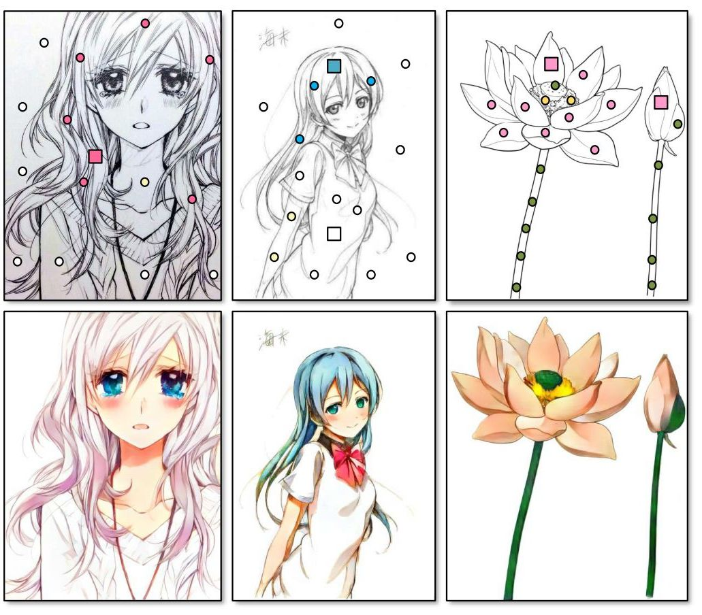
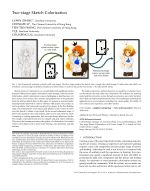
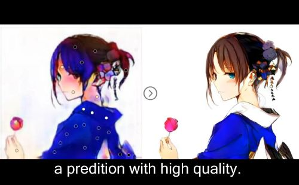

SIGGRAPH 2018
ACM Transactions on Graphics (SIGGRAPH Asia 2018 issue), Vol. 37, No. 6, November 2018, pp. 261:1-261:14.
Sketch or line art colorization is a research field with significant market demand. Different from photo colorization which strongly relies on texture information, sketch colorization is more challenging as sketches may not have texture. Even worse, color, texture, and gradient have to be generated from the abstract sketch lines. In this paper, we propose a semi-automatic learning-based framework to colorize sketches with proper color, texture as well as gradient. Our framework consists of two stages. In the first drafting stage, our model guesses color regions and splashes a rich variety of colors over the sketch to obtain a color draft. In the second refinement stage, it detects the unnatural colors and artifacts, and try to fix and refine the result. Comparing to existing approaches, this two-stage design effectively divides the complex colorization task into two simpler and goal-clearer subtasks. This eases the learning and raises the quality of colorization. Our model resolves the artifacts such as water-color blurring, color distortion, and dull textures. We build an interactive software based on our model for evaluation. Users can iteratively edit and refine the colorization. We evaluate our learning model and the interactive system through an extensive user study. Statistics shows that our method outperforms the state-of-art techniques and industrial applications in several aspects including, the visual quality, the ability of user control, user experience, and other metrics.
Paper(PDF, 9.68MB) 
Video(MP4, 7.26MB) 
@article{zhang-2018-colorize,
author = {Lvmin Zhang and Chengze Li and Tien-Tsin Wong and Yi Ji and Chunping Liu},
title = {Two-stage Sketch Colorization},
journal = {ACM Transactions on Graphics (SIGGRAPH Asia 2018 issue)},
month = {November},
year = {2018},
volume = {37},
number = {6},
pages = {261:1-261:14}
}